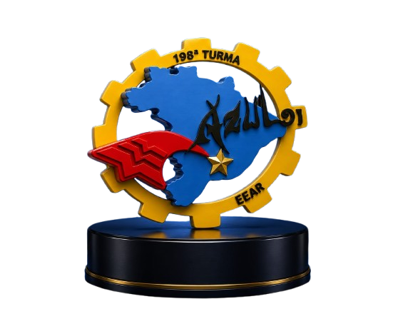
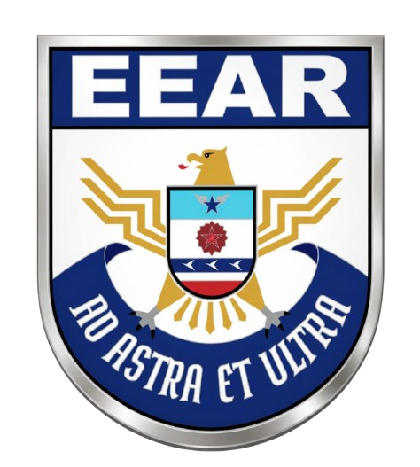
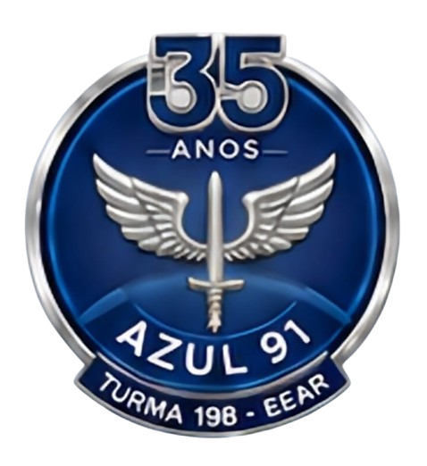
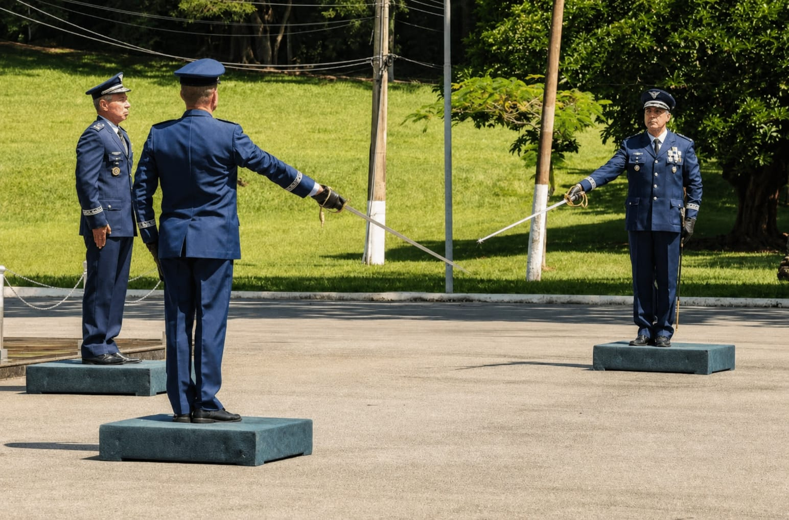

AZUL 91 - HISTÓRIA
O Início da Jornada (1991)
A trajetória da 198ª Turma da Escola de Especialistas de Aeronáutica (EEAR), mais conhecida entre seus participantes como Azul 91, teve início no ano de 1991. Jovens vindos das mais diversas regiões do Brasil cruzaram os portões do "Berço dos Especialistas", em Guaratinguetá, impulsionados por um mesmo ideal: servir à Força Aérea Brasileira com honra, disciplina e dedicação. O início foi marcado pelo intenso período de adaptação, onde a rotina civil deu lugar à vibração e às exigências da vida militar. Diante dos desafios físicos e intelectuais, as individualidades se fundiram, dando espaço a um forte espírito de corpo.

Superação e Irmandade nos Bancos da EEAR
Durante os meses de formação técnico-militar, os alunos enfrentaram rotinas rigorosas de estudos, inspeções e instruções em campo. Foi no compartilhamento das dificuldades nos alojamentos, no apoio mutuo durante as madrugadas de preparação e nas marchas sob o sol que se consolidaram laços indestrutíveis. A Azul 91 transformou-se em uma verdadeira irmandade, alicerçada na confiança mútua, no respeito e na certeza de que nenhum companheiro seria deixado para trás. Cada barreira superada nos cassinos e nas salas de aula moldava não apenas especialistas de excelência, mas cidadãos de têmpera forte.

O Voo Pelo Brasil e a Preservação dos Vínculos
Após a tão sonhada formatura, os integrantes da Azul 91 espalharam-se pelas asas do país, servindo com brio em diferentes organizações militares da FAB. Longe do ninho de Guaratinguetá, cada um deu sua quota de sacrifício para a defesa e o desenvolvimento da nação. Apesar das distâncias geográficas e das diferentes trajetórias na carreira, o sentimento de pertencimento à Azul 91 permaneceu inabalável. Ao longo das décadas, a turma soube preservar seus vínculos originais, dividindo conquistas familiares, apoiando-se nos momentos difíceis e mantendo viva a chama acesa nos bancos escolares.

O Retorno ao Berço: Brigadeiro do Ar Arrais
A história da Azul 91 atingiu um marco institucional histórico através do ex-aluno 91/1018 Arrais, da Sétima Esquadrilha. Formado em Eletrônica em 04/12/1992, ingressou na Academia da Força Aérea (AFA) em 1994 e foi declarado Aspirante em 1997. Galgando os postos com o mesmo profissionalismo de especialista, foi promovido a Brigadeiro do Ar em 31/03/2026 e, em 07/04/2026, assumiu o Comando da Escola de Especialistas de Aeronáutica, sendo o primeiro Oficial-General da Azul 91 a liderar nossa ex-escola.

Assunção de Comando (2026)